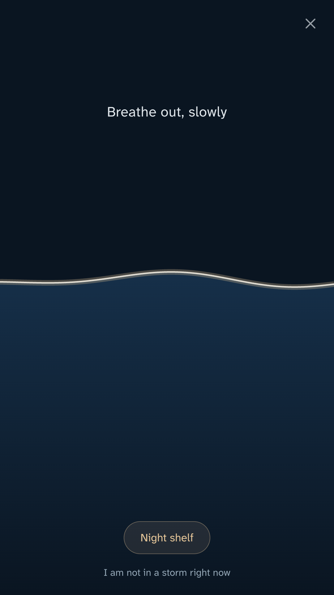
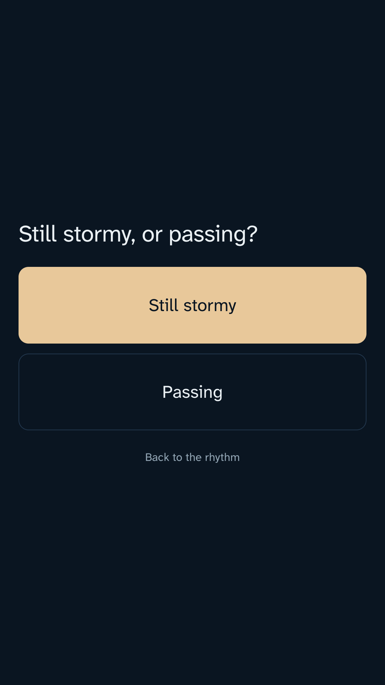
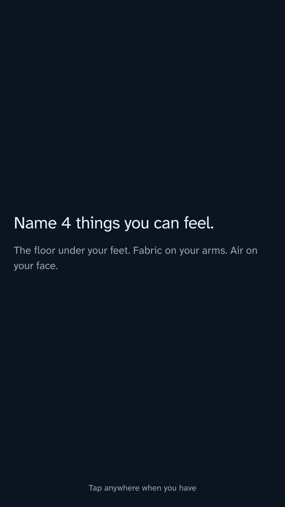
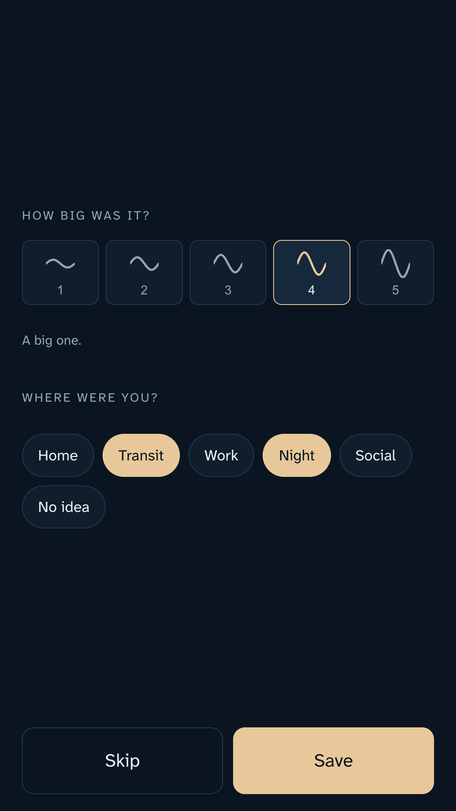
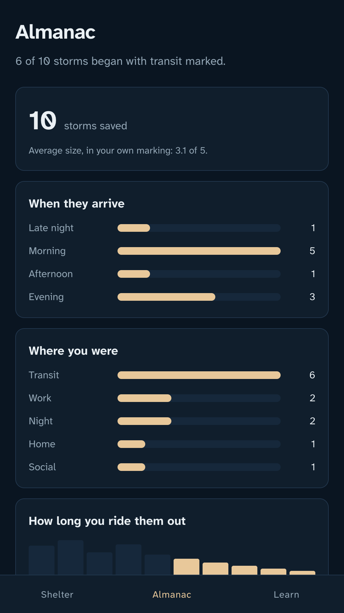
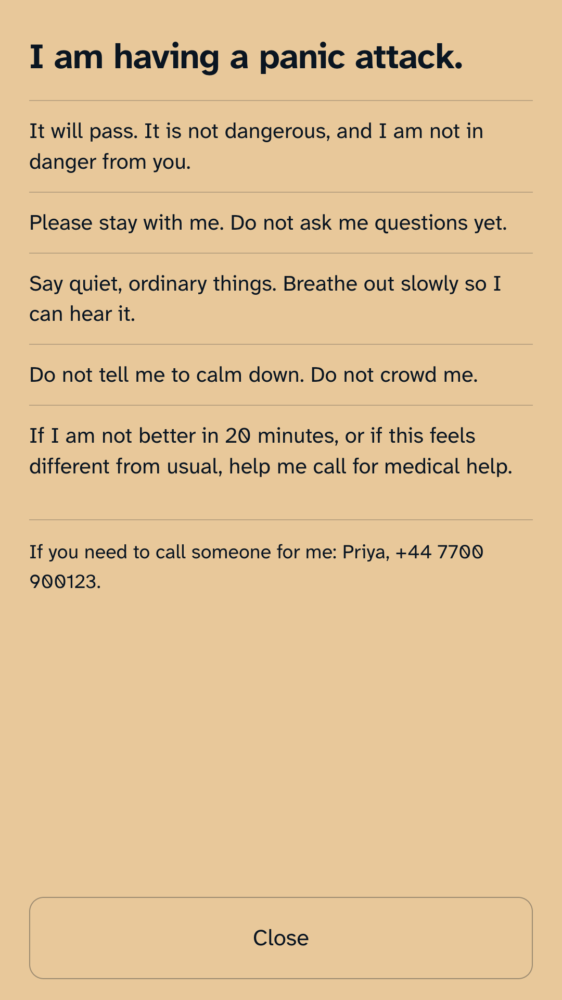

Tap the icon. Before the screen has finished brightening, your phone is already pulsing a slow breathing rhythm you can follow with your eyes shut.
Get it on Google PlayFree and complete. No account, no subscription, works in airplane mode.

During a panic attack, a splash screen is a locked door.
So are logins, mood check ins, content libraries and the question "what would you like to do today?" Working memory is gone, and the app you need is the one that has already started helping by the time you look at it.

Every other breathing app puts a circle on a screen. Sway puts the rhythm in the vibration motor, so you can follow it lying in the dark, on a train, or with the phone still in your pocket. Nobody has to see you doing it.
A gathering swell. The vibration rises like a wave coming in, and you rise with it.
Nothing at all. Stillness is the instruction, and it starts at zero seconds because holding your breath can make an attack worse.
A long train of pulses that fade and spread apart. The out breath is the longer half, always.
Sessions open a little quicker than comfortable, to meet a racing breath where it is, and decelerate over three minutes.
Sway never dumps you back into a menu when the wave passes. It asks one question, with two answers, and follows whichever one you gave it.



One tap from the session screen opens a shelf with three things on it, and none of them need a network.

The promises, and how to check them
Sway does not request the internet permission, which you can verify on the Play listing before you install it. Android will not let it open a connection at all, so the two second promise holds in a basement, a plane and a subway car. Point a packet sniffer at it. That is an invitation.
There is no sign up, no email, no cloud and no analytics. Your storm log, your person and your settings live in this phone's private app storage and nowhere else. Export them as plain text whenever you want, or erase everything in two taps.
The whole app is free, and none of it is a trial. There is no subscription, no in app purchase and no advertising. A recurring bill attached to panic would be both bad ethics and bad software, and an ad after a panic attack would be an obscenity.
No streaks, no flame counters, no notification implying you have let yourself down, no mood score, no anxiety inventory. There is no number in this app you can fail. A bad month is a bad month, not a broken chain.
Built to be used four times a year and trusted every single time.
Get it on Google PlaySway is a self help wellness tool. It is not a medical device, it does not diagnose anything, and it is not a treatment for panic disorder or any other condition. If you are in danger, or if what you are feeling is new, different or involves chest pain, call your local emergency number or one of the lines in the app rather than opening this.